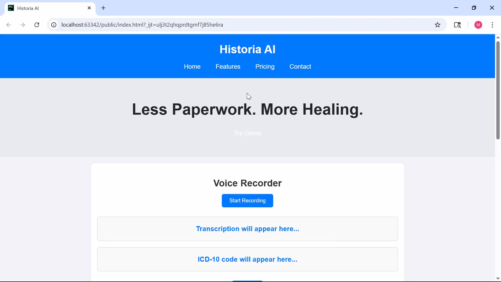
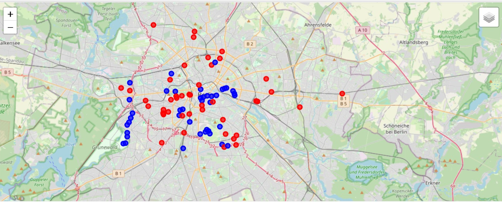

Flood AI Simulation
Tech Stack: Raster, Shapefile, Machine Learning
A system to predict and visualize urban flood risk using raster data, shapefiles, and machine learning. Output includes interactive flood maps.
Tags: AI, Simulation, Geospatial
Tech Stack: Raster, Shapefile, Machine Learning
A system to predict and visualize urban flood risk using raster data, shapefiles, and machine learning. Output includes interactive flood maps.
Tags: AI, Simulation, Geospatial
Tech Stack: Flask, JWT, AISHA TTS
Local-first voice assistant for ICD-10 transcription with speech-to-text and multilingual TTS. Built with Flask and vanilla JS frontend.
Tags: AI, Voice Assistant, Healthcare
Tech Stack: Streamlit, LLaVA, Mistral
Multimodal health chatbot with emotional camera input, real-time advice, and LLM reasoning powered by ChromaDB + Mistral.
Tags: AI, Chatbot, Streamlit
Tech Stack: Streamlit, Geopandas, Random Forest
A real-time dashboard for disaster prevention. Uses point/raster feature extraction, ML predictions, and color-coded risk layers.
Tags: AI, Streamlit, Disaster Management